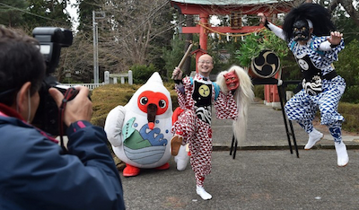
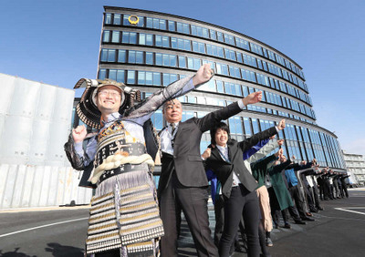
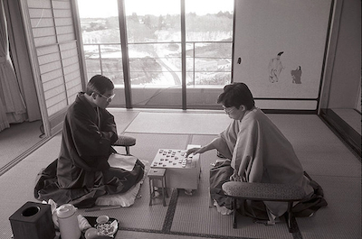
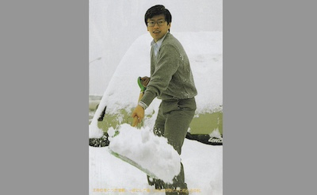
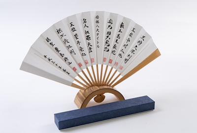

☗ 各項目とも最近の撮影が上です ☗
☖ 棋士の段位や称号は撮影当時のものです ☖
竜王戦・名人戦関連写真
'24 2/21 竜王戦1組本戦出場者決定戦
「丸ポーズ」で熟考する丸山忠久九段
(127手で羽生善治九段に勝利)
2023年10月24日 (第36期竜王戦第3局前日)
藤井聡太竜王らが小倉駅から移動する
10月25,26日開催の大盤解説会会場
ウェルとばた
2020年11月26,27日 第33期竜王戦 第4局
砂むし風呂に集う豊島将之竜王ら
挑戦者:羽生善治九段

2019年3月30日
第31期竜王戦第7局
(2018年12月20,21日 於下関市の春帆楼)の
前日に両対局者(羽生善治竜王・広瀬章人八段)が
巌流島に上陸したことを記念して両者の手形と
揮毫が浮き彫りされた銘板が下関市によって設置され、
この日、広瀬新竜王を迎え除幕式が行われた。
「決闘の聖地」に設置された銘板
2017年6月26日 第30期竜王戦決勝トーナメント
藤井聡太四段が増田康宏四段に勝利し、デビュー
から29連勝を達成した。この「歴代連勝記録保持者」
を祝う将棋盤「29」は、スポニチカメラマンが作成して
持ち込み、会見場で手渡したもの(撮影:小海途良幹)
第75期名人戦
第一局 2017年4月6、7日
前夜祭での佐藤天彦名人(29)と稲葉陽八段(28)
20代同士で名人位を争うのは 第54期 羽生善治名人対
森内俊之八段以来21年ぶりということで注目された
2017年5月15日 (第4局の前日)
岐阜市入りし対局場となる十八楼周辺の
川原町を散策する両対局者
続いて 長良川鵜飼の屋形船「信長丸」上で
インタビューに応じた
2017年5月25日 第5局一日目
対局が行われる「料理旅館 鶴形」へ
徒歩で向かう両対局者
翌26日 二日目は人力車で移動する
佐藤天彦名人(上)と稲葉陽八段
2016年5月11日(第74期名人戦第3局前日)
桜島を背景に羽生善治名人と佐藤天彦八段
(対局場:城山ホテル)
1997年5月7,8日 第55期名人戦第三局
愛知県蒲郡市西浦温泉「銀波荘」
羽生善治名人 対 谷川浩司竜王
1995年10月20,21日 第8期竜王戦第一局
(対局会場:中国 北京市 京倫飯店)
万里の長城での羽生善治竜王と佐藤康光前竜王
1960(昭和35)年5月12,13日
第19期名人戦 第3局
大山康晴名人 対 加藤一二三八段
於:戸畑市中原 西日本工業倶楽部(旧松本邸)
[朝日新聞 東京 5月12日 夕刊]
王将戦(勝者の記念撮影)
第72期王将戦
2023年3月13日 (第6局翌日)
佐賀県三養基郡上峰町 大幸園で
うなぎの掴み取りに初挑戦する藤井聡太王将
第71期王将戦
2021年11月24日
王将戦挑戦権(券)を手に入れた藤井聡太竜王
2022年1月11日 (第1局翌日)
静岡県掛川市の天竜浜名湖鉄道の掛川駅で乗務員用の制服
を借りてスポニチの「勝者の記念写真」初体験の藤井聡太竜王
鉄道会社の制服を着たのもこのときが初めて
2022年2月11日
立川SORANO HOTELに到着してくつろぐ
渡辺明王将と藤井聡太竜王
第70期王将戦
2021年1月12日 (第一局翌日)
静岡県掛川市の掛川花鳥園で
コガネメキシコインコの祝福を受ける渡辺明王将
2月12日 第4局前日の
渡辺明王将と永瀬拓矢王座
2月15日 (第4局翌日)
立飛ホールディングスのキャラクターとともに
R-HM型軽飛行機の前に立つ永瀬拓矢王座
同日 「SORANO HOTEL」最上階のプールで
前日の対局を振り返る永瀬拓矢王座
(撮影: 吉田剛)
3月2日 第5局
亀好きの永瀬拓矢王座、初めてのスッポン
3月15日 (第6局翌日)
出雲そばの蕎麦打ちに挑戦した後、さんべ荘名物
の羽釜風呂に浸かり、防衛の疲れを癒す渡辺明王将
於: 島根県大田市の国民宿舎 さんべ荘
第69期王将戦
2020年1月14日 (第一局翌日)
掛川花鳥園のシロフクロウと渡辺明王将
(挑戦者: 広瀬章人八段)

3月27日
佐渡市 佐渡グリーンホテル きらくでの第七局で
王将位防衛から一夜明け、悪魔を払い豊年を祈る神事
「鬼太鼓」の出立ちの渡辺明王将
(朱鷺のマスコット:サドッキー)
7月7日
第69期王将戦就位式に於いて渡辺明王将への労いと
王将就任の祝福の気持ちを込め、大阪王将の餃子一年分と
特別報奨金が贈呈された。
第68期王将戦

2019年2月8日 第三局(三連勝)翌日
那須与一の弓を模した建築物であり、1月
に開庁したばかりの栃木県大田原市庁舎前で
市長や職員と共にポーズをとる渡辺明棋聖
2月25日 久保利明王将に四連勝し、王将位を獲得
ちゅら海の映像をバックに三線を手にした渡辺明新王将
第67期王将戦
2018年1月9日 (第一局翌日)
掛川城で掛川特産品 横須賀凧を上げる
豊島将之八段
3月16日 防衛から一夜明けたこの日
久保利明王将がJS松本オフィシャル
ショプで勝利のヘディング
第66期王将戦
2017年3月2日 (第五局翌日)
佐渡汽船上の郷田真隆王将
3月16日 第六局で王将位を奪還の翌日
浜松のうなぎをつかむ久保利明王将
第65期王将戦
2016年2月18日 (第四局翌日)
20年ぶりにスキー板を履いた郷田真隆王将
(青森県弘前市)
第64期
2015年2月17日 第四局を制し
パティシエ姿の郷田真隆王将
(埼玉県 浦和市 ロイヤルパインズホテル浦和)
第63期王将戦
2014年1月31日 (第三局翌日)
神奈川県秦野市 湯元陣屋の露天風呂で
新聞を持つ渡辺明王将
2月20日 (第四局翌日)
青森県弘前市で雪かきをする羽生善治三冠
(スポニチ 王将戦勝者の記念写真第一回も
中村修九段による雪かきだった)
第62期
2013年3月8日 (第五局翌日)
愛知県蒲郡市西浦町で、西浦の海をバックに撮影前
自転車に乗って手を振る渡辺明王将
第56期
2007年3月8日 (第六局翌日)
海辺で対局を振り返る佐藤康光棋聖
静岡県賀茂郡河津町今井浜温泉「今井荘」
第55期
2006年3月8日 (第六局翌日)
一行と共に函館の市場へ繰り出した佐藤康光棋聖
(湯の川プリンスホテル 渚亭)
第52期

2003年1月17日 (第一局翌日)
浜松のうなぎを掴み取りする羽生善治王将
(グランドホテル浜松)
第47期王将戦
1998年1月8日 第一日目昼休憩時
栃木県宇都宮市「宇都宮グランドホテル」
記念撮影のために庭園を歩く
羽生善治王将と佐藤康光八段
午後から降雪し関東地方は記録的な大雪に
同夜、第一局を制し雪だるまに目を入れる羽生王将
1月19,20日 第二局
滋賀県彦根市「彦根プリンスホテル」
第45期王将戦
1996年2月15日 (第四局翌朝)
谷川浩司王将を破り初の王将位を獲得
史上初の七冠全冠制覇を達成から一夜明け
コーヒーを飲んでくつろぐ羽生善治七冠
「羽生善治王将 七冠達成の地」の記念碑
山口県下関市 マリンピアくろいの当時敷地内
第43期

1994年2月25日 第五局 右:谷川浩司王将
対局前日に、挑戦者の中原誠前名人、立会の有吉道夫九段
等が乗った飛行機が悪天候により羽田へ引き返したため
異例の一日制・持ち時間5時間に変更して対局が行われた
於:青森県三沢市小牧温泉「小牧第三グランドホテル」
第36期
1987年1月28,29日
山口県下関市 マリンピアくろいでの大盤解説会
中村修王将対中原誠名人
第35期

1986年1月15日 (第六局翌朝)
中原誠王将から王将位を獲得から一夜明け
山梨県南都留郡山中湖村山中湖温泉
「ホテルマウント富士」で雪かきをする中村修新王将
雑誌「将棋世界」より
後に恒例となるスポニチの「王将戦勝者の記念写真」
第一号となった写真はこちら(スポニチより)
その他の棋戦
2024年3月23日 ABEMA 地域対抗戦
和気藹々のチーム九州 作戦会議室
第七局 対佐藤天彦九段戦で増田康宏
七段が二歩を指してしまった瞬間の
チーム関東B 作戦会議室
(説明追加2024.4.2)
2024年3月17日放送 NHK杯優勝
佐々木勇気八段
2024年2月10日 朝日杯優勝
永瀬拓矢九段
2023年12月24日 サントリー オールスター東西戦
東軍控え室
リレー将棋で 東軍(羽生善治九段・渡辺明九段)と
対局中の西軍 豊島将之九段と藤井聡太八冠
今回から規定が変わり、味方の助言を得られない
ことを飛車を振った後で知り・・・
2024年1月5日配信 銀河戦
優勝した丸山忠久九段と羽生善治会長
2023年9月13日 関西将棋会館 地鎮祭
第94期棋聖戦第一局 於ベトナム ダナン
リゾートホテル「ダナン三日月」での対局翌日
藤井聡太棋聖と佐々木大地八段をはじめとする一行
が、ダナン観光に出掛けた。
西遊記で孫悟空が閉じ込められたといわれている五行山
洞窟内、向かい合って象棋(中国将棋)を指している
石像の前の一行
一行は食事の後自由行動となり、両対局者はその後
在ダナン日本国総領事館を訪れ矢ヶ部総領事らと
懇談した。夜にダナン国際空港から出国、6月7日朝
成田国際空港着で帰国した。
2023年3月12日 日本将棋連盟・駅伝部が
”Number Do EKIDEN in 国立競技場” に出場
1区4周7.8km-----渡辺明名人
2区3周5.5km-----佐々木勇気八段
3区2周3.7km-----木村一基九段
4区3周5.55km----岡部怜央四段
(説明追加2024.4.2)
2022年5月30日(名人戦防衛翌日)
渡辺明棋王が10連覇を達成した第47期棋王戦就位式
就位副賞として神宮球場の年間ペアチケットが
ヤクルトスワローズの「つば九郎」から贈られた
2022年4月17日 第67回天童桜まつり 人間将棋大会
東軍 佐々木大地六段
西軍 藤井聡太5冠
解説 木村一基九段
聞き手 武部さゆり女流四段
(説明追加2024.4.2)
ローソンスイーツ インタビューでの
深浦康市九段
2020年9月10日
将棋日本シリーズJTプロ公式戦2回戦第二局
於グランメッセ熊本(熊本県上益城郡)
斉藤慎太郎八段との対局の前日(9日)、熊本県庁を
訪問した渡辺明名人と熊本県営業部長のくまモン
2019年5月26日
「スポニチ 山中湖ロードレース」に参加し
山中湖一周を完走した佐々木勇気七段、
渡辺明王将、加藤桃子女流三段(撮影:久冨木 修)

年月日不詳 JR日光線車内という情報もあり
佐藤天彦さんと永瀬拓矢さん
2018年9月25日 第26期銀河戦が放映された
初優勝の佐藤天彦名人が色紙に揮毫した
2018年1月17日 「家庭画報」の企画
春夏コレクション"FENDI Friday! FENDI Fryday!"
での佐藤天彦名人と篠山紀信さん
佐藤天彦名人 (撮影:篠山紀信)
2017年10月15日
天下分け目の関ヶ原 東西人間将棋
岐阜県関ヶ原町「笹尾山特設ステージ」
で山崎隆之八段と対戦する佐藤天彦名人
2017年1月14,15日
第10回 朝日杯将棋オープン戦
熊本地震復興祈念対局(於熊本市総合体育館)
初日18:30より ホテルニューオータニ熊本に於いて
「棋士とのつどい」が開催された
2016年9月3日 10/1付の棋士が誕生
棋士番号307 藤井聡太新四段
棋士番号308 大橋貴洸(たかひろ)新四段
森信雄七段のブログより
「澤田真吾六段が来訪。金太郎は澤田六段
の頭が乗りやすいようだ」2015.8.7
2013年11月2〜4日
チェス・ジャパンオープンに参加の羽生善治三冠
2009年4月19日 第54回天童桜まつり 人間将棋大会
東軍 村山慈明(やすあき)五段
西軍 井上慶太八段
解説 藤井猛九段
2002年10月7日
日中国交正常化30周年・王座戦50周年 記念対局
のため上海を訪れた羽生善治王座と佐藤康光棋聖
1982年4月3日 NHKスタジオ
第7回 小学生名人戦 準決勝・決勝戦
左から アナウンサー、羽生善治さん(優勝)、斎田
純一さん(3位)、森内俊之さん(3位)、山下雄さん(準優勝)
アシスタントの中瀬(藤森)女流初段
解説 谷川浩司八段(写真には入っていない)
1981年4月4日 NHKスタジオ
第6回 小学生名人戦
左から NHK原アナウンサー、佐藤康光さん(3位)
畠山成幸さん(3位)、作曲家の小山内たけともさん
中井広恵さん(準優勝)、高谷新也さん(優勝)
真部一男七段、石尾和子女流六段
物品など
2023年
高槻市制80周年記念マンホールふたデザインコンクール
受賞6作品のひとつ「特別賞」(林美智子さん作)
「3月のライオン」デザインマンホール
千駄ヶ谷 鳩森八幡神社前五叉路のこの1枚から
始まり、王様ニャーまで6種類9枚が
千駄ヶ谷大通り商店街に設置されている。
なお、"桐山零(通常版)マンホールカード"が
「東京・将棋会館」」1階売店にて配布されている
そうです(祝日以外の毎火曜休み)。

2018年7月17日
第89期棋聖戦で豊島将之八段が棋聖位を獲得し、八大
棋戦冠を八人でひとつずつ保持する状態となった。
(上)Shogi 8Title Holder クリアファイル(限定450)
(下)八棋士の署名扇子(限定300)
『大山名人もなか』(倉敷市高須賀 菓匠 文近堂)
「歩を成金にするのには一歩一歩の努力が必要だ」
という大山名人の語録によるもの
もなかの片面は「歩」片面は「と」
2016年7月19日 青山スクエア
天童将棋駒 制作実演(作家 桜井亮さん)